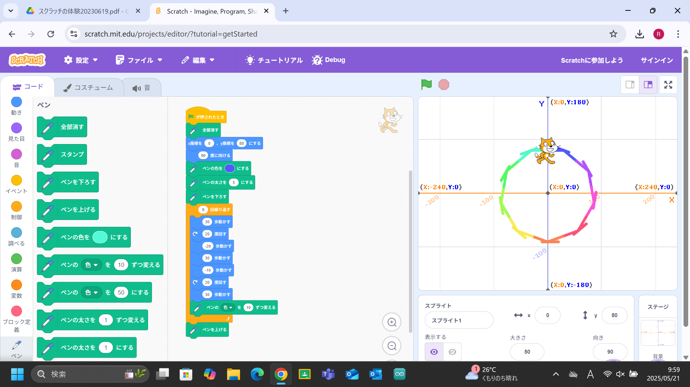
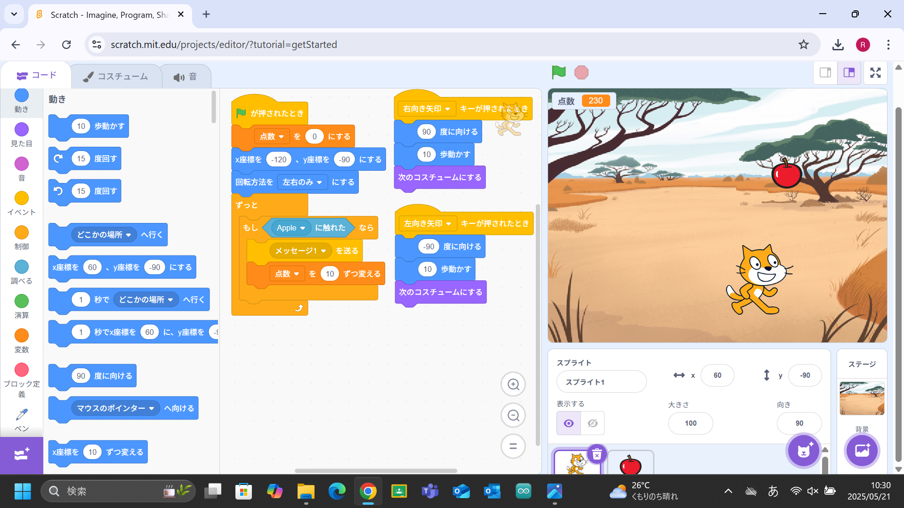

1週目のレポート ： 公大高専１年実習I-1
3a班04番 nikudanngo-st
第1週目
1-1 サイエンスアート

1.内容
scratchを用いてサイエンスアートを作成した。
スプライトをプログラムを用いて動かし、 その軌跡にラインを引いて図形を描くものである。
2.感想
あまり特徴的な図形を作図することはできなかった。
もっと様々なブロックを使い、面白い動きをさせたいと感じた。
1-2 ゲーム

1.内容
scratchを用いてゲームを作成した
スプライトをプログラムを用いてキーボードで動かし、リンゴを拾うゲームである。
2.感想
ひとまずは普通のものを作ることはできた。
ほかのブロックを用いてもっといろいろな要素を付け加えたいと思った。
1-3 ホームページ作成
私のホームページ
1.内容
もとより用意されているhtmlを編集して自分のhome pageを作成した。
自分についての紹介をするweb pageである。
2.感想
もともと作られていたプログラムの文章部分を書き換えるだけなのでそこまで難しくはなかった。
プログラムに書いてある文字列がそれぞれどのような役割を果たしているのか気になった。
各ページへのリンク
1週目のレポート
2週目のレポート
3週目のレポート
私のホームページ